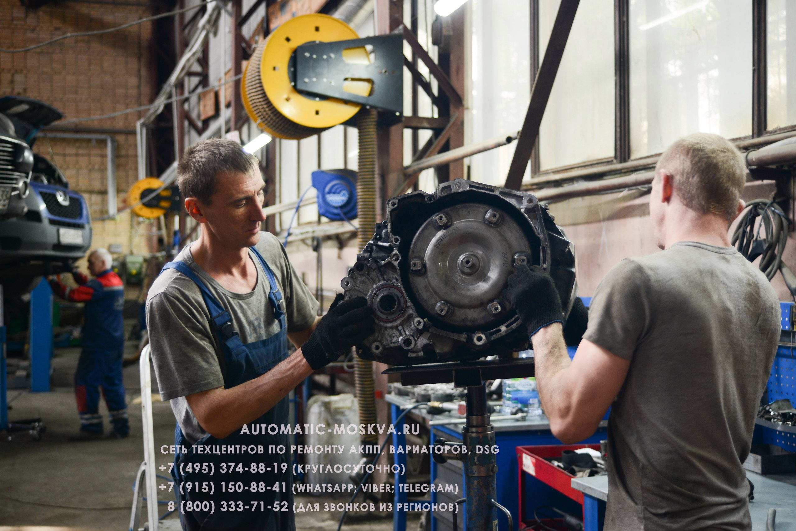

Сеть автосервисов по ремонту АКПП, Вариаторов и DSG
В специализированных техцентрах "Автоматик Москва"
осуществляется диагностика, ремонт и обслуживание автоматических коробок переключения передач (АКПП),
вариаторов (CVT), роботроников (DSG).



Фото техцентров и нашей работы
В специализированных техцентрах
"Автоматик Москва" осуществляется диагностика, ремонт
и обслуживание автоматических коробок переключения передач (АКПП),
вариаторов (CVT), роботроников (DSG).
Наши подразделения
Честный сервис: Вы можете присутствовать на всех этапах
диагностики и ремонта трансмиссии; все работы согласуются
заранее; мы сохраняем полную гарантию, при предоставлении
клиентом своих запчастей
Срок капитального ремонта АКПП 3 - 5 дней.
Стоимость капитального ремонта 22 000 рублей: снятие 5000
рублей, установка 5000 рублей (цена может быть выше в
зависимости от сложности например если потребуется вывешивать
двигатель), разборка, промывка в нефрасовой ванне, дефектовка
7000 рублей, сборка с подготовкой к установке 5000 рублей + к
этой стоимости необходимо добавить запчасти по мере износа (у
нас большой склад запчастей почти под все типы КПП, но также
можем произвести ремонт с запчастями клиента) Мы работаем для
Вас без выходных и оперативно решаем все проблемы с АКПП,
вариаторами, DSG.
Первичная диагностика проводится в течение 1 часа
(сканирование, осмотр, тест-драйв с адаптером, при необходимости
снятие поддона с тестированием соленоидов) Разборка и дефектовка
АКПП в день обращения.
Эвакуатор в пределах МКАД - бесплатно при необходимости
переборки АКПП Гарантия на АКПП от 6 до 14 месяцев.
Работает круглосуточная техническая поддержка:
+7 (495) 374-88-19;
+7 (499) 653-71-88(круглосуточно);
+7 (915) 150-88-41(МТС; WhatsApp; Viber;
Telegram) e-mail: atmmsk@ya.ru ремонт АКПП480010.
Эвакуация автомобиля на ремонт АКПП осуществляется круглосуточно
на охраняемую, бесплатную парковку наших Техцентров.
Вызов эвакуатора: +7 (495) 374-88-19. Мы ремонтируем с гарантией все узлы автоматических трансмиссий (ЭБУ, гидроблок, гидротрансформатор, мехатроник) Через 1000км пробега после ремонта осуществляется диагностика и замена масла.
Вызов эвакуатора: +7 (495) 374-88-19. Мы ремонтируем с гарантией все узлы автоматических трансмиссий (ЭБУ, гидроблок, гидротрансформатор, мехатроник) Через 1000км пробега после ремонта осуществляется диагностика и замена масла.
Отзывы наших клиентов:
По всем вопросам звоните:
+7 (495) 374-88-19;
+7 (499) 653-71-88 (круглосуточно);
+7 (915) 150-88-41 (МТС; WhatsApp;
Viber; Telegram) ;
8 (800) 333-71-52 (для звонков из
регионов)
Наши услуги
Этапы Ремонта АКПП
Эксплуатация и раннее выявление неисправностей АКПП
Обратите Внимание
Эвакуация на охраняемую, бесплатную парковку Техцентра круглосуточно.
+7 (495) 374-88-19;
+7 (499) 653-71-88 (круглосуточно);
+7 (915) 150-88-41
(МТС; WhatsApp; Viber; Telegram) ;
(МТС; WhatsApp; Viber; Telegram) ;
8 (800) 333-71-52
(для звонков из регионов)
(для звонков из регионов)
Сеть специализированных техцентров по ремонту АКПП, Вариаторов и DSG Автоматик-Москва.
Консультация и запись 24/7:
+7 (495) 374-88-19
(многоканальный);
8 (800) 333-71-52 (для звонков из
регионов);
+7 (915) 150-88-41 (WhatsApp;
Viber)
Восточный АО:
ул. Амурская д.7 (ст.м. Щелковская)
ул. Дворникова д.7 (ст.м. Лефортово)
Старообрядческая улица, 28Ас1 (ст.м. Авиамоторная)
Московская область, г.Люберцы, ул. Смирновская д.30 (ст.м. Жулебино, Котельники)
Московская область, г.Котельники, Новорязанское шоссе д.5 ТЦ "М5" (ст.м. Котельники)
ул. Дворникова д.7 (ст.м. Лефортово)
Старообрядческая улица, 28Ас1 (ст.м. Авиамоторная)
Московская область, г.Люберцы, ул. Смирновская д.30 (ст.м. Жулебино, Котельники)
Московская область, г.Котельники, Новорязанское шоссе д.5 ТЦ "М5" (ст.м. Котельники)
Юго-Восточный и Южный АО:
Каширское шоссе д.41 (ст.м. Кантемировская-Каширская)
ул. Москворечье д.12 с.2 (ст.м. Кантемировская)
33-й киллометр МКАД вл.10 (Варшавсое шоссе 170Г) (cт.м.Аннино, Лесопарковая)
Россия, Московская область, Ленинский городской округ, садовое товарищество Берёзка-2, 238 (ст.м. Красногвардейская)
ул. Мусы Джалиля, 5 к1 с3 (ст.м. Борисово, Шипиловская)
Симферопольское шоссе д.3
33-й киллометр МКАД вл.10 (Варшавсое шоссе 170Г) (cт.м.Аннино, Лесопарковая)
Россия, Московская область, Ленинский городской округ, садовое товарищество Берёзка-2, 238 (ст.м. Красногвардейская)
ул. Мусы Джалиля, 5 к1 с3 (ст.м. Борисово, Шипиловская)
Симферопольское шоссе д.3
Юго-Западный и Западный АО:
Верейская улица, 29с35 (ст. м. Кунцевская)
Ул. Василисы Кожиной д.7 с.6 (ст. м. Фили, Славянский бульвар, Парк Победы)
ул. Дмитрия Ульянова д.20 (ст. м. Академическая)
г.Одинцово, Коммунальный проезд д.16А
Ул. Василисы Кожиной д.7 с.6 (ст. м. Фили, Славянский бульвар, Парк Победы)
ул. Дмитрия Ульянова д.20 (ст. м. Академическая)
г.Одинцово, Коммунальный проезд д.16А
Северо-Западный и Северный АО:
ул. Добролюбова д.1 с.5 (ст.м. Дмитровская)
Алтуфьевcкое шоссе д.33 (ст.м. Отрадное)
ул. 1-я Магистральная д.12 (ст.м.Хорошёвская, Зорге)
Дмитровское шоссе д.62 к.2 с.8 (ст.м. Верхние лихоборы, Окружная, Селигерская)
ул. Беломорская д.40 с.18 (ст.м. Речной вокзал)
2-й Лихачёвский переулок, 12А (ст.м. Лихоборы)
Ул. Беломорская д.40 (ст.м. Беломорская, Речной вокзал, Ховрино)
Пятницкое шоссе д.20 (ст. м. Митино)
г. Химки, Шереметьевское шоссе д.2 (аэропорт Шереметьево)
Алтуфьевcкое шоссе д.33 (ст.м. Отрадное)
ул. 1-я Магистральная д.12 (ст.м.Хорошёвская, Зорге)
Дмитровское шоссе д.62 к.2 с.8 (ст.м. Верхние лихоборы, Окружная, Селигерская)
ул. Беломорская д.40 с.18 (ст.м. Речной вокзал)
2-й Лихачёвский переулок, 12А (ст.м. Лихоборы)
Ул. Беломорская д.40 (ст.м. Беломорская, Речной вокзал, Ховрино)
Пятницкое шоссе д.20 (ст. м. Митино)
г. Химки, Шереметьевское шоссе д.2 (аэропорт Шереметьево)
Северо-Восточный АО:
Мытищи, Хлебозаводская улица, 6
Ярославское шоссе д.26 (ст.м. Свиблово)
Большая Почтовая д.36 с.2 (ст.м. Электрозаводская)
Ярославское шоссе д.26 (ст.м. Свиблово)
Большая Почтовая д.36 с.2 (ст.м. Электрозаводская)